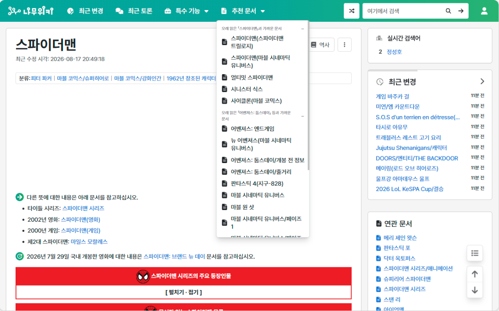

Introduction
안녕하세요.
저는 신입 데이터 엔지니어 사지한입니다.
저는 신입 데이터 엔지니어 사지한입니다.
"데이터가 어디서 깨지는지 찾고, 건수로 확인합니다"
파이프라인이 멈추면 다시 돌리기 전에 로그부터 엽니다.
고친 뒤에는 옮기기 전과 후의 건수가 같은지 세어 보고 나서야 끝냅니다.
Overall Experiences
- 삼성 청년 SW 아카데미 (SSAFY) 15기2026.01 ~
특화 프로젝트에서 팀장이자 데이터 엔지니어로 뉴스 1,110만 건 수집과 적재 파이프라인을 맡았습니다.
- 알파에듀 현장실습, 연구개발팀2024.12 ~ 2025.02
사내 교육 플랫폼의 기존 기능을 데이터베이스 쿼리와 프로시저부터 읽어 파악했습니다.
- 국립창원대학교 정보통신공학과 졸업2020.03 ~ 2026.02
SkillSet
사용하는 언어와 데이터 도구
언어
- Python
- SQL
수집과 스케줄
- Kafka
- Airflow
처리
- PySpark
- Databricks
저장
- HDFS
- Iceberg
- Delta Lake
- MySQL
환경
- Docker
- AWS EC2
개발 도구
협업
- Git
- GitHub
- GitLab
- Jira
Portfolio

한눈
같은 사건 뉴스를 관점별로 나눠 보는 서비스
SSAFY 특화 프로젝트입니다.
언론사 13곳 기사 1,110만 건을 모아 적재하는 파이프라인을 맡았습니다.

체리컨슘
내 카드로 어디서 결제할지 알려 주는 앱
개인 프로젝트입니다.
카드사 원문을 승인된 혜택 데이터로 만드는 Databricks 파이프라인을 만들었습니다.

namu-reco
읽은 문서로 다음 문서를 추천하는 크롬 확장
개인 프로젝트입니다.
나무위키 덤프 8.8GB를 노트북 한 대로 처리해 2주 만에 웹스토어에 올렸습니다.
Awards
- 2025.11이래가꼬 프로젝트 장려상
- 2025.08한국전기전자학회 하계학술대회 우수논문상 장려상
- 2024.082024 학생창업유망팀 300+ 예비트랙 선정
Certification
- 2026.09정보처리기사
- 2025.04DAsP 데이터아키텍처 준전문가
- 2024.06SQLD SQL 개발자
- 2024.05네트워크관리사 2급
Contact Me
- Emailjihan0469@gmail.com
- GitHubhttps://github.com/limbs-han